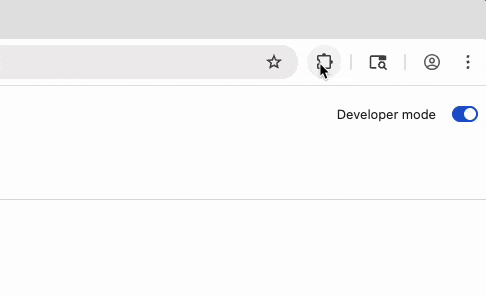
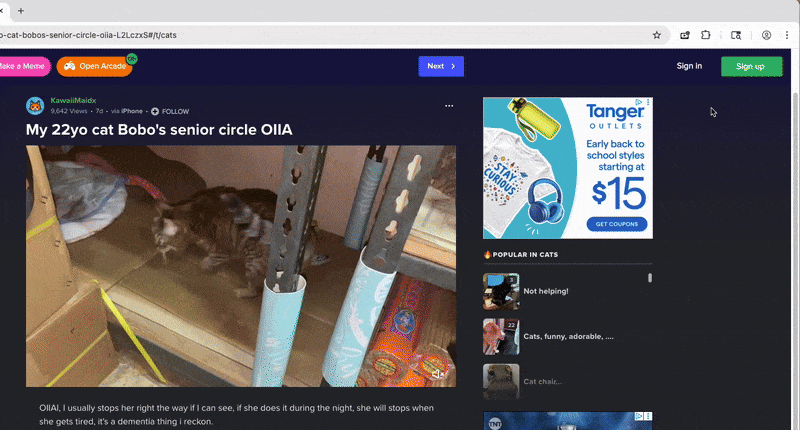

📌 Step 1: Pin the Extension
After installing the extension, click the puzzle icon (🧩) near the top-right of your browser. Then pin “Draggable Video Resizer” so it’s always visible.
🎯 Step 2: Select a Video
Click the extension icon, then click “Select a video”. Your cursor will change — click on any video to activate resizing and dragging.
Heads up: If you're trying this on a tab that was open before installation, you may need to refresh the page first.
📺 Optional: Select All Videos
Want to make every video on the page draggable at once? Click “Select all videos” from the extension popup.
🛠️ Step 3: Drag & Resize
Use the top bar to drag. Resize freely using the corner handle. Playback and volume controls are built in.